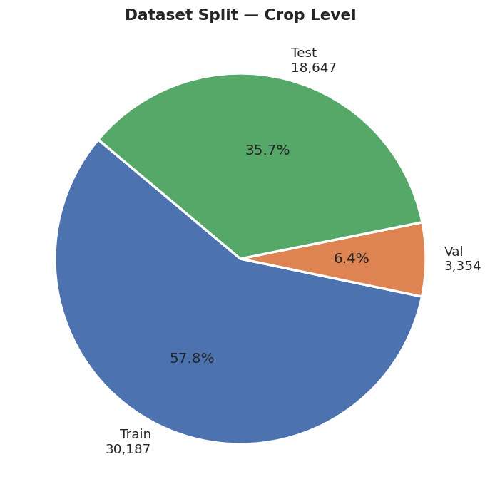
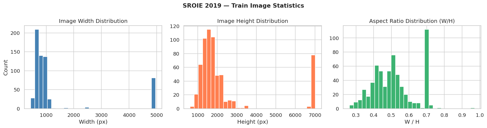
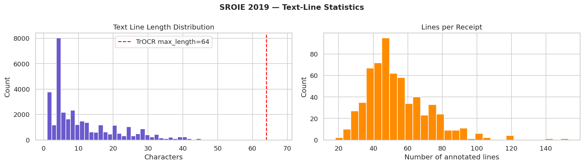
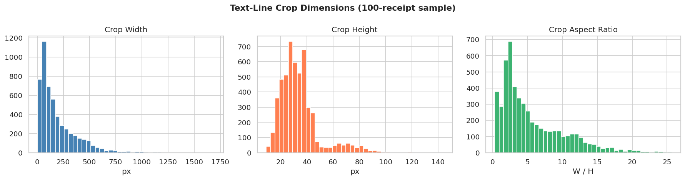
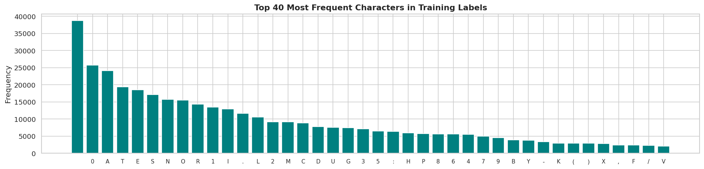
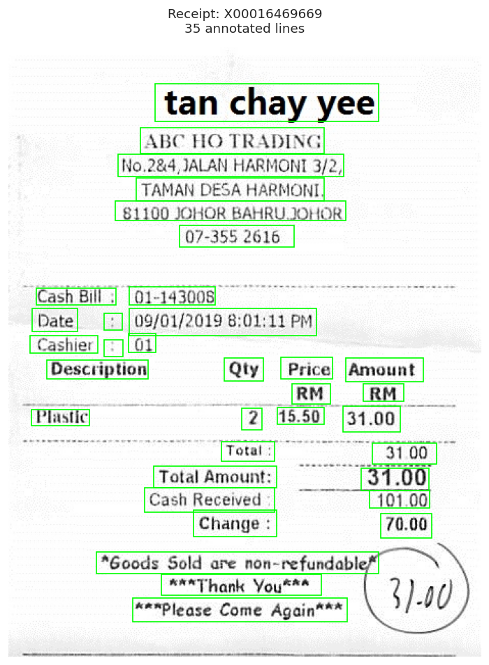
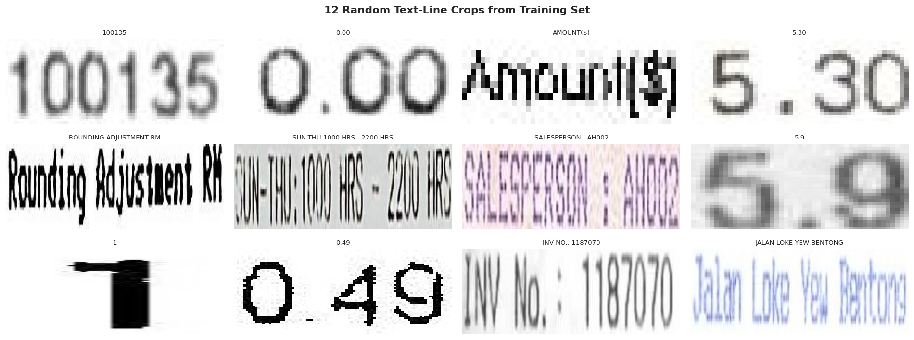
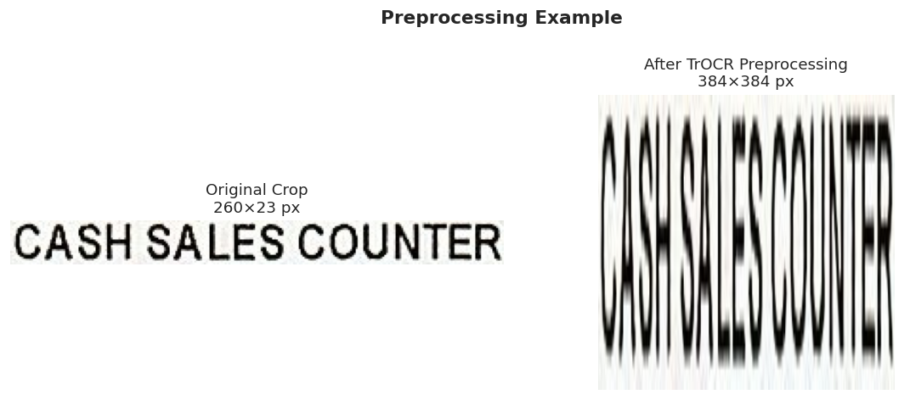

End-to-End Transformer OCR on the SROIE 2019 Dataset
Optical Character Recognition (OCR) on scanned receipts is a foundational task for many real-world document intelligence pipelines. Unlike OCR on clean typeset documents, receipts present particular challenges: variable print quality, irregular fonts, multi-column layouts (item name alongside price), rotated text, low-contrast ink, and physical damage.
In this project we fine-tune TrOCR (microsoft/trocr-base-printed), a fully Transformer-based OCR model, on the SROIE 2019 dataset — the standard benchmark for scanned Malaysian receipt understanding from ICDAR 2019. Our goal is to achieve high character-level accuracy on individual text-line crops extracted from receipts and to understand both the strengths and failure modes of this approach as a stepping stone toward more robust document-understanding systems.
The remainder of this report is structured as follows: Section 2 reviews related work; Section 3 describes the dataset and our exploratory analysis; Section 4 details the model architecture; Section 5 covers the training methodology; Section 6 presents quantitative and qualitative results; Sections 7–8 discuss limitations and future directions; and Section 9 concludes.
Traditional OCR systems follow a detect-then-recognise paradigm. Scene-text detectors (EAST, CRAFT, DBNet) localise word or line bounding boxes; a subsequent recogniser then reads each crop. Recognisers have historically relied on a CNN feature extractor followed by a CTC-decoded LSTM — the CRNN family. While effective for clean printed text, these architectures struggle to model long-range context and require separate language-model post-processing.
The introduction of the Vision Transformer (ViT) and the success of Sequence-to-Sequence Transformers in NLP motivated purely attention-based OCR. TrOCR (Li et al., 2021) combines a ViT encoder with a RoBERTa-initialised autoregressive decoder, achieving state-of-the-art results on printed, scene, and handwritten benchmarks without any CTC layer or CNN backbone. Its encoder processes images as flat patch sequences, giving it a natural ability to attend globally — well-suited to the variable-length text found on receipts.
SROIE 2019 (Scanned Receipts OCR and Information Extraction) was introduced at ICDAR 2019 and consists of three tasks: (1) OCR, (2) keyword spotting, and (3) information extraction. Many winning approaches on Task 1 use CNN-LSTM-CTC pipelines; more recently, Transformer-based recognisers fine-tuned on SROIE have demonstrated competitive word-error rates. LayoutLM and its successors extend this to joint text+layout modelling, but still rely on OCR as an upstream component — motivating work on the OCR stage quality.
The SROIE 2019 dataset contains 973 scanned receipt images sourced from Malaysian supermarkets and convenience stores, split into 626 training and 347 test receipts. Each image is annotated with:
company, date, address, total.| Split | Receipts | Text-line Crops | Used in This Work |
|---|---|---|---|
| Train | 626 | 33,539 | 10,000 (compute budget) |
| Validation | — | 3,354 | Full |
| Test | 347 | 18,645 | 2,000 (eval subset) |

Receipt images exhibit substantial resolution variance. Most images are portrait-oriented (W/H ≈ 0.4–0.7) with heights ranging from roughly 1,000 to 4,000 px. A small number of images are wider than they are tall (rotated receipts). The diverse resolutions necessitate resizing at the preprocessing stage.

The 33,539 training crops have a mean label length of approximately 13–15 characters. The distribution is right-skewed: a majority of lines are short (store name abbreviations, prices, dates), while a small tail of very long lines (e.g., full addresses) exists. Fewer than 1% of labels exceed the TrOCR max_length of 64 tokens, meaning truncation is not a significant concern.

max_length=64 cutoff. (Right) Number of annotated lines per receipt.
The training corpus contains around 90–100 unique character types. Uppercase Latin letters, digits, and punctuation (periods, slashes, parentheses) dominate. Currency symbols ($, RM), the percent sign, and the at-sign (@) appear regularly — reflecting the financial nature of receipt text. Lowercase letters are less frequent, as many receipt printers capitalise all text. The character frequency analysis directly informed our choice of the BPE tokenizer bundled with trocr-base-printed, which covers the full vocabulary.



Each annotated text line undergoes the following pipeline before being fed to the model:
TrOCRProcessor: resize to 384 × 384 px, normalise pixel values to [−1, 1].max_length=64, truncation=True, padding="max_length".−100 so they are ignored by the cross-entropy loss.
TrOCR is a pure-Transformer sequence-to-sequence model for OCR, proposed by Li et al. (2021). It requires no CNN feature extractor and no CTC decoding. The encoder processes an input image; the decoder autoregressively generates the text token-by-token.
The encoder is a ViT-Base/16 initialised from a pre-trained image classification checkpoint. The input image (384 × 384) is divided into non-overlapping 16 × 16 patches, yielding a sequence of 576 patch embeddings. A learnable [CLS] token is prepended, and fixed 2-D sinusoidal positional embeddings are added. The sequence passes through 12 self-attention transformer blocks (hidden dim 768, 12 heads, MLP ratio 4×), producing a contextual representation of the entire image that serves as the encoder memory.
The decoder is initialised from RoBERTa-base. It receives the previously generated output tokens and attends to the encoder output via multi-head cross-attention, generating the next token at each step. Decoding is performed with beam search (beam size 4) to suppress noisy predictions.
| Component | Pre-training | Parameters |
|---|---|---|
| ViT Encoder | BEiT image classification | ~86 M |
| RoBERTa Decoder | English text MLM | ~125 M |
| Cross-attention bridges | Randomly initialised | ~12 M |
| Total | ~333 M |
Several properties make TrOCR well-suited to printed receipt OCR:
| Hyperparameter | Value |
|---|---|
| Base model | microsoft/trocr-base-printed |
| Optimizer | AdamW (β₁=0.9, β₂=0.999, ε=1e-8) |
| Learning rate | 5 × 10⁻⁵ |
| LR schedule | Linear warmup (1,000 steps) → linear decay |
| Gradient clipping | Max norm 1.0 |
| Batch size | 8 |
| Epochs | 8 |
| Training samples | 10,000 (Kaggle session limit) |
| Hardware | Kaggle — NVIDIA Tesla T4 (16 GB VRAM) |
| Image size | 384 × 384 |
| Max token length | 64 |
The model is trained with teacher-forcing: the ground-truth token sequence is fed as decoder input, shifted right by one position. The loss is the standard cross-entropy between the predicted logits and the target tokens, with padding positions masked out (label = −100).
After each epoch, Character Error Rate (CER) is computed on the full validation set (3,354 crops) using greedy decoding. The best checkpoint (lowest Val CER) is saved to disk. The best model was saved at Epoch 7 with Val CER = 2.45%.
trocr-evaluation.ipynb → training_curves.png| Epoch | Train Loss | Val CER | Val WER |
|---|---|---|---|
| 1 | 0.6652 | 0.3684 | 0.4583 |
| 2 | 0.5772 | 0.2315 | 0.3537 |
| 3 | 0.3746 | 0.1136 | 0.2383 |
| 4 | 0.2237 | 0.0721 | 0.1752 |
| 5 | 0.1274 | 0.0722 | 0.1443 |
| 6 | 0.0815 | 0.0462 | 0.1244 |
| 7 ✓ | 0.0364 | 0.0245 | 0.0902 |
| 8 | 0.0168 | 0.0250 | 0.0917 |
| Metric | Value | Interpretation |
|---|---|---|
| Test CER | 0.0203 | On average 2.03% of characters are wrong |
| Test WER | 0.0856 | 8.56% of word tokens contain at least one error |
| Exact Match Rate | 88.65% (1,773/2,000) | Full line predicted correctly |
| Median CER | 0.0000 | Majority of lines are perfectly transcribed |
| Mean CER | 0.0142 | Average per-line character error rate |
| Std CER | 0.0604 | High variance — a few very hard lines skew the mean |
| % lines CER < 0.1 | 95.0% | Near-perfect on the vast majority |
| % lines CER > 0.5 | 0.2% | Catastrophic failures are very rare |
trocr-evaluation.ipynb → cer_distribution.png| Ground Truth | Prediction | CER |
|---|---|---|
| #01-01 | #01-01 | 0.000 |
| $7.10 | $7.10 | 0.000 |
| ( GST REG. NO. 000992739328 ) | ( GST REG. NO. 000992739328 ) | 0.000 |
| #1010802 | #1010802 | 0.000 |
| (1-3) | (1-3) | 0.000 |
| Ground Truth | Prediction | CER |
|---|---|---|
| V | VI | 1.000 |
| A | ^ | 1.000 |
| UJI | U01 | 0.667 |
| 1 SMALL CONE | 1 SMALL COME AGAVE | 0.583 |
| NET AMT @ GST6% | WWX AMT 6% | 0.533 |
| T H A N K Y O U | THANK YOU | 0.438 |
| CASHIER: THANDAR | CASHIER: NICOLE | 0.438 |
| (GST REG NO. 001492992000) | (GST REG NO. 001492929292929292000) | 0.346 |
trocr-evaluation.ipynb → qualitative_examples.pngThe fine-tuned TrOCR model achieves 97.97% character accuracy and an 88.65% exact-match rate on the SROIE test set, demonstrating that a Transformer-based model can be effectively adapted to receipt OCR with as few as 10,000 training samples. Prices, product codes, GST registration numbers, and other structured tokens are recognised near-perfectly — exactly the tokens most important for downstream extraction tasks.
Due to Kaggle GPU session time limits, only 10,000 of the 33,539 available training crops were used. Training on the full set would likely push CER below 1% and reduce the long tail of failure cases. The rapid CER improvement from Epoch 1 to 7 (36.84% → 2.45%) suggests the model has not yet fully converged.
When used for full-page inference (via the Gradio demo), the model was applied with a sliding-window approach over the full receipt image rather than using ground-truth crop coordinates. This introduces misalignment artifacts: multi-column lines (item name + price side by side) confuse the model because it was trained exclusively on single-column crops. A detect-then-recognise pipeline — pairing a text detector (e.g., DBNet, CRAFT) with TrOCR — would resolve this.
This section outlines concrete directions for improving the current system. The approach is deliberately open: each direction may be explored independently or in combination.
The most immediate improvement is to use all 33,539 training crops, potentially with additional data augmentation (brightness jitter, affine transforms, synthetic noise), to further reduce CER and improve robustness to print quality variations.
Integrating a dedicated text detector (CRAFT, DBNet++, or the detection branch of PaddleOCR) upstream of TrOCR would eliminate the need for ground-truth bounding boxes at inference time and enable robust end-to-end receipt processing. Evaluation should then use end-to-end CER (detection + recognition combined).
microsoft/trocr-large-printed uses ViT-Large as encoder and is pre-trained on a much larger synthetic corpus. Fine-tuning this variant on SROIE is expected to further improve metrics, at the cost of 3–4× more parameters and inference time.
| Architecture | Key Advantage | Reference |
|---|---|---|
| PaddleOCR (PP-OCRv4) | Lightweight, fast, strong open-source baseline | Du et al., 2022 |
| SVTR (Single Visual model for Text Recognition) | ViT-style without a separate decoder; fast inference | Du et al., 2022 |
| ABINet | Iterative correction with a language model in the loop | Fang et al., 2021 |
| LayoutLMv3 | Joint vision–language pre-training with 2D layout | Huang et al., 2022 |
| Donut (Document Understanding Transformer) | OCR-free end-to-end document parsing | Kim et al., 2022 |
A character-level or word-level language model trained on receipt text could be used to re-rank beam hypotheses, reducing errors on low-frequency but predictable tokens (store names, product codes). Even a simple receipt-domain word list used for constrained decoding would reduce substitution errors on known vocabulary.
The ultimate goal of receipt OCR is to extract structured entities (total, date, company, address). Plugging the fine-tuned TrOCR into a downstream Named Entity Recognition model (e.g., LayoutLMv3 fine-tuned on SROIE Task 3) would enable end-to-end evaluation of the full pipeline and expose which OCR errors propagate into extraction errors.
Generating synthetic receipts with diverse fonts, paper textures, and realistic degradations (creases, shadows, stains) using tools such as doctr's augmentation pipeline or custom PIL-based renderers could substantially expand the effective training set and improve robustness in real-world conditions.
We presented a fine-tuning study of TrOCR (microsoft/trocr-base-printed) on the SROIE 2019 printed receipt dataset. Starting from a pre-trained encoder-decoder Transformer, we trained on 10,000 text-line crops for 8 epochs using a standard AdamW + linear-warmup schedule on a single T4 GPU. The resulting model achieves a Character Error Rate of 2.03%, Word Error Rate of 8.56%, and an Exact Match Rate of 88.65% on a 2,000-sample test subset.
The model excels at structured tokens — prices, registration numbers, product codes — which are the most relevant fields for downstream extraction. Failure cases are concentrated on very short strings, letter-spaced decorative text, and rare proper nouns. These failure modes are well-understood and addressable through a combination of more training data, a detection stage, and post-processing.
This work serves as a strong baseline for receipt OCR and a foundation for future work integrating richer architectures, larger models, and end-to-end document understanding pipelines.
Report generated for academic submission · TrOCR Receipt OCR Project · 2025–2026